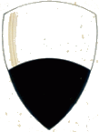

|
|
 |
2 luglio 1715
SELVA
|
2° CAPPOTTO REALIZZATO DA CAPPELLARO
L'ordine è quello di entrata fra i canapi e il grassetto indica la vincitrice
Cliccando sui nomi dei fantini e sulle immagini, si apriranno le relative pagine
(Abbreviazioni: B=baio; F=falbo; G=grigio; I=isabella; M=morello; R=roano; S=sauro)
| B. della Posta di Siena |
ONDA |
n.r. |
| M. della Posta di Siena |
CIVETTA |
n.r. |
| B. della Posta di Siena |
LUPA |
n.r. |
| M. della Posta di Siena |
NICCHIO |
n.r. |
| R. della Posta di Siena |
BRUCO |
n.r. |
| B. della Posta di Buonconvento |
ISTRICE |
n.r. |
| B. della Posta di Torrenieri |
GIRAFFA |
n.r. |
| B. del Fornaio dei Galli |
SELVA |
Cappellaro |
| B. della Posta di Siena |
TARTUCA |
n.r. |
| B. della Posta di Siena |
CHIOCCIOLA |
Strega |
| G. della Posta di Buonconvento |
OCA |
n.r. |
| M. della Posta di Siena |
TORRE |
n.r. |
| M. dell'osteria della Rosa |
VALDIMONTONE |
n.r. |
| F. della Posta di Siena |
LEOCORNO |
Morino I |
| M. della Posta di Siena |
DRAGO |
n.r. |
GIUDICI DELLA MOSSA: Arturo d'Elci e Sallustio Malavolti
CAPITANO VITTORIOSO: Giovanni Casacci
La contrada non vinceva dal 16 agosto 1711
Il fantino non vinceva dal 16 agosto 1707

Corsero questo palio tutte le Contrade, eccettuate Aquila e Pantera.
Il palio era di lamina d'argento fiorita, con l'Immagine di Maria SS.ma di Provenzano e l'armi dei 3 Signori della Festa, del valore di 100 talleri.
Fu ordinato che chi avesse vinto questo palio dovesse dare 30 talleri, o 4 braccia del drappo medesimo, in premio a chi avesse fatta la migliore comparsa.
Al seguito di essersi tenuti fra loro, per circa 2 girate, il Leocorno (fantino Morino) e la Chiocciola (fantino Strega) la Selva, correndoci Giov.Batta Pistoi detto Cappellaio, che era 3°, all'ultimo giro al Casato potè passare ambedue, e vincere il palio.
(Da "I quaderni del Griccioli" della Nobil Contrada dell'Aquila)





|
|
|